2.7 An Example
To see the outlined propagate and distribute method at a concrete example, consider the problem specified by the following constraints:
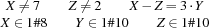
To solve the problem, we start with a space whose store constrains the variables  ,
,  , and Z to the given domains. We also create three propagators imposing the constraints 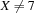,
, and Z to the given domains. We also create three propagators imposing the constraints 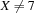,  , and
, and  . We assume that the propagator for realizes interval propagation, and that the propagators for the disequations and realize domain propagation.
. We assume that the propagator for realizes interval propagation, and that the propagators for the disequations and realize domain propagation.
The propagators for the disequations immediately write all their information into the store and disappear. The store then knows the domains
![X\in[1\#6\;\;8]
\qquad
Y\in1\#10
\qquad
Z\in[1\;\;3\#10]](latex69.png)
where 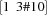 denotes the finite domain 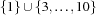. The interval propagator for  can now further narrow the domains to
can now further narrow the domains to
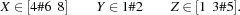
Now the space is stable but neither failed nor solved. Thus, we continue with a first distribution step. We choose to distribute with the constraint  . Figure 2.2 shows the resulting search tree.
. Figure 2.2 shows the resulting search tree.
The space obtained by adding a propagator for can be solved by propagation and yields the solution

The space obtained by adding a propagator for 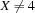 becomes stable immediately after this propagator has written its information into the constraint store, which then looks as follows:
![X\in[5\#6\;\;8]
\qquad
Y\in1\#2
\qquad
Z\in[1\;\;3\#5]](latex77.png)
This time we distribute with respect to the constraint  .
.
The space obtained by adding a propagator for fails since is inconsistent with the store obtained by adding .
The space obtained by adding a propagator for  becomes stable immediately after this propagator has written its information into the constraint store, which then looks as follows:
becomes stable immediately after this propagator has written its information into the constraint store, which then looks as follows:
![X\in[6\;\;8]
\qquad
Y\in1\#2
\qquad
Z\in[1\;\;3\#5]](latex80.png)
Now we distribute with respect to the constraint  .
.
The space obtained by adding a propagator for can be solved by propagation and yields the solution
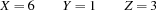
Finally, the space obtained by adding a propagator for  can also be solved by propagation, yielding the third and final solution
can also be solved by propagation, yielding the third and final solution
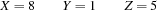
An alternative to the propagate and distribute method is a naive enumerate and test method, which would enumerate all triples  admitted by the initial domain constraints and test the constraints , , and for each triple. There are 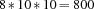 candidates. This shows that constraint propagation can reduce the size of the search tree considerably.
admitted by the initial domain constraints and test the constraints , , and for each triple. There are 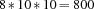 candidates. This shows that constraint propagation can reduce the size of the search tree considerably.